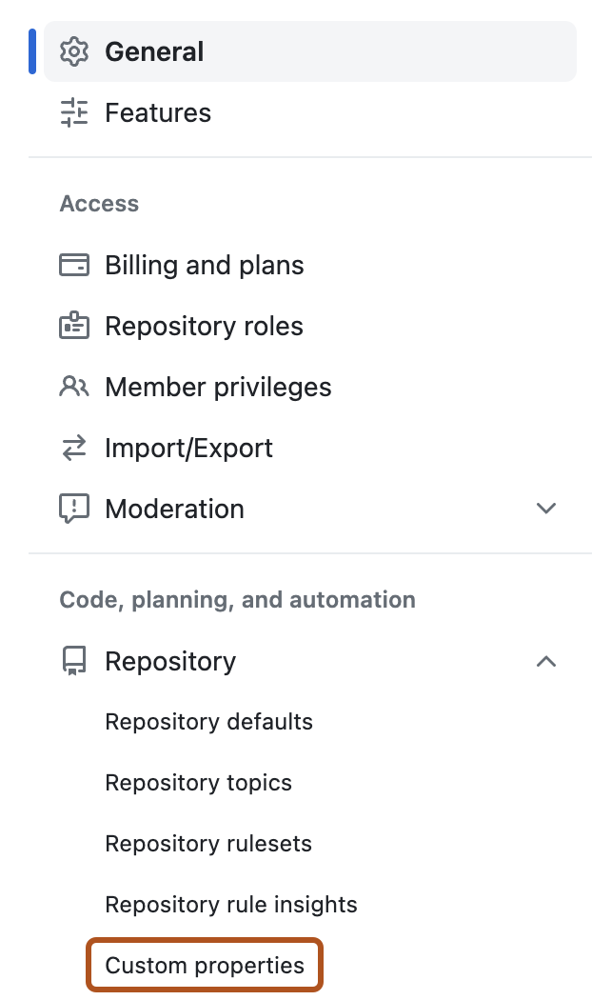

Create and enforce open source license policies to control which licenses your dependencies are allowed to use.
Note
Open source license compliance is in public preview and subject to change.
Prerequisites
Before you configure license policies, ensure that:
Your organization has GitHub Code Security
You have access to manage enterprise policy and rulesets
Dependency graph is enabled for repositories you want to evaluate
About license compliance
Open source license compliance lets you define a policy that specifies which licenses your dependencies are allowed to use.
When the policy is enforced with rulesets, GitHub evaluates pull requests that change package manifests, checks direct and transitive dependencies, and compares detected licenses to your policy. Pull requests with noncompliant dependencies remain blocked until violations are resolved.
Violations are typically resolved by:
Updating the pull request to use compliant dependencies
Approving an exception for a package
Updating policy to allow a license where appropriate
Create a license policy
Navigate to your enterprise. For example, from the Enterprises page on GitHub.com.
At the top of the page, click Policies.
In the sidebar, click License compliance.
Click Default policy.
On the Edit license policy page, click Add licenses and choose Select from list.
From the license picker, select the licenses you want to permit. The licenses in this list are categorized based on their general risk level for use in corporate environments, but this is purely informational and does not constitute legal advice. Always check with your organization's legal team for policy guidance.
Save your changes.
Alternately, if you have an existing license policy from another tool, you can import it as a list of SPDX expressions.
On the Edit license policy page, click Add licenses and choose Manual input.
Enter one or more SPDX license identifiers, each on a new line.
Save your changes.
The licenses you add form your baseline policy. You can later add package-level exceptions when handling alerts.
Configure access for Enterprise Open Source License Managers
Navigate to your enterprise. For example, from the Enterprises page on GitHub.com.
At the top of the page, click People.
In the left sidebar, click Enterprise roles.
Click Role assignments.
Click Assign role.
Select the Enterprise Open Source License Manager role.
Choose a user or team to assign the role to.
Click Assign role.
Assigning this role also subscribes reviewers to request notifications so they can respond to dismissal requests quickly.
Optionally use custom properties to control rollout per repository
If you want a gradual rollout, use a repository custom property to control whether each repository is in inactive, evaluate, or active enforcement mode.
On GitHub, navigate to the main page of the organization.
Under your organization name, click Settings. If you cannot see the "Settings" tab, select the dropdown menu, then click Settings.
In the sidebar, under "Code, planning, and automation", click Repository, then click Custom properties.

Create a single-select repository custom property, for example open_source_license_compliance.
Add values for inactive, evaluate, and active.
Set the default value to inactive.
Decide who can change the property value.
Assign property values to repositories based on their rollout stage.
Enforce policy in pull requests with rulesets
We suggest making two rulesets, one for Evaluate mode and one for Active mode. If you created custom properties to control the rollout, you can target those properties here.
Go to the rulesets page for the scope where you want enforcement.
Create a branch ruleset.
Under the ruleset name, set Enforcement status:
For your first ruleset, select Evaluate.
For your second ruleset, select Active.
Choose how to target repositories:
If you use custom properties, target by open_source_license_compliance:
For the evaluate-mode ruleset, target repositories where the property value is evaluate.
For the active-mode ruleset, target repositories where the property value is active.
If you do not use custom properties, target repositories by repository pattern or explicit repository selection.
Enable Require license compliance results before merging.